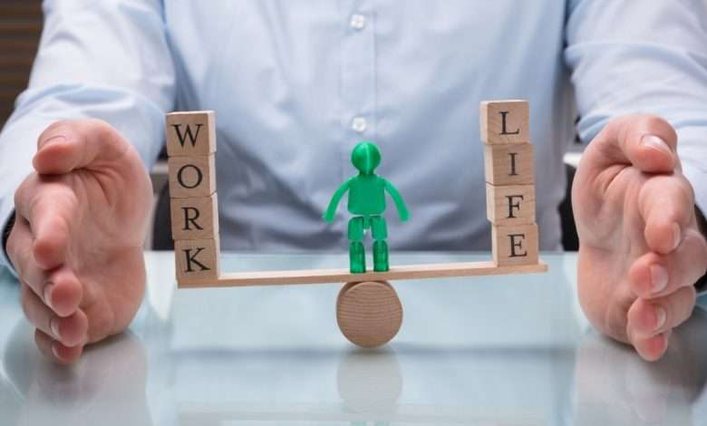

Morning hope
The two words resonate with the sunset, and safari, and perhaps a martini. Sorry not during COVID, so I digress. I want to capture the essence of African living, not the miseries but the mysteries of what brings hope to a billion people. I woke up, grabbed my camera, and my hope for today, to capture the bustle of Johannesburg’s empty streets during lock down. The scavenger-preneurs pushing their trolleys in the tree lined northern suburbs streets. It is early in morning, and these young men hope to get some recyclables in the dustbin. Without hesitation, I focus the lens for my daily ritual, capturing the rising African sun whose waves are filtering thought the Jacaranda leaves. You see, juxtaposed with the hopes of the scavenger-preneurs is my hope that in my life the sun will rise again. I follow them through as they gather the findings of the day to the recycling depo.
Love, hope, smile.

TSmiles of newly found hope emerge as I capture one of the young men emerging from the depo. He seemed to have earned an honest living today, because he leaves the depo with his girlfriend. They are ready to face the new day. I am reminded that this is my art too, I must earn an honest living, so I continue to look for Johannesburg’s stories of hope.
As I leave the Roodepoort depo, I notice traders gathering their stock for today, ready to go and conquer some street corner. This captures the hustle that is happening despite the announcement of a level 4 lockdown by the president last night I pause on Ontdekkers and Hendrik Potgieter, where I notice a young woman with a baby. She was just dropped off in that corner, by a yellow taxi. I capture the how that the morning fills, including the hope of a meal.
What does photography mean to me? I ponder at the question. Does it fulfil dreams, or it fires my hopes? Well, this art can evolve to many facets in a single. Today it is about hope. More often, it is the art of capturing images in themes relative to the photographer's disposition or taste. As much as it is a creative field, it upholds principles in its execution.
Let me move away from the desperate situations from this morning. I just want to see what is selling in this fruit and veggie market. Well built, Giorgio who seems to have some Italian blood in his DNA stands by the door. This sanitizing station has surely seen better days. But I use it anywhere. “Business is low”, he laments.

The Reality.
M“y online customers seem to order elsewhere it seems. Stock is not moving, see I have had to give the homeless so much stock before it goes bad”. “We will get through this” Giorgio concludes the conversation he just started. I ask for his permission to capture the nicely packed food parcels he has stashed by the wall. He hopes things would be better, he feels he has lost too much, and he gathers small talk as he tells me he wants to retire in Italy. I remember what I am here for as I am almost sobbing myself, I want to capture hope, and suddenly two of his grandchildren come running into the store. He reminisces and tells me that for him, this is his only hope.
Our precarious works...
As I listen to Giorgio’s predicament, my mind travels to the world of my own reality. My art is a capital-intensive field whether one enters the field as a Freelancer from an amateur to professional. It is not about shooting pictures per se, but moments and experiences that tell a story or images shot for post-production such as Commercial Photography which encapsulates or epitomizes high-end gear. This is where the socio-economy of the field is glaring, South Africa is no exception.
The mastering of the trade is learning the use of tools such as dealing with various photography gear from different suppliers and choosing your field carefully. It is a hands-on field that needs practice and it's fields vary from nature to wildlife, to boudoir, to lifestyle, to documentary, to foodography, to photojournalism. But today is about hope.
Every corner, expectation in Johannesburg is palpable, expecting to capture something new, to get a breakthrough, a daily wage perhaps, to get a good Samaritan, or someone whose mind lapses on the street to give some thugs some hope. I capture it all, hoping for a complete story of my hope. I text one of my students about my photography diaries, she thinks the only thing to capture, is a safari or sunset. My hope is that she embraces my work, and never take photography as a side hobby, but turn it into a proper profession.
Contextually, South Africa any other African state classifies photography in the media field but does not have a nationally recognizable body that wholly regulates it except The Arts Council of South Africa which has Art Galleries as quasi- regulators. In short you have a National Association of Photographers for accreditation and affiliation. Whose presence and help to an entrant is unknown to me
Photography as an art discipline requires one to be observant of three most important issues light, subject, and composition. These are good for a professional output. But today I choose to focus on hope, something good for a lifetime output.